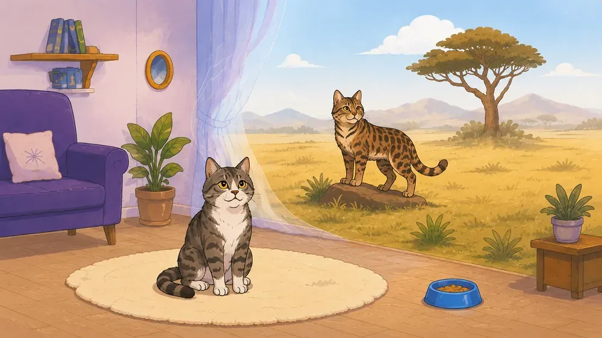
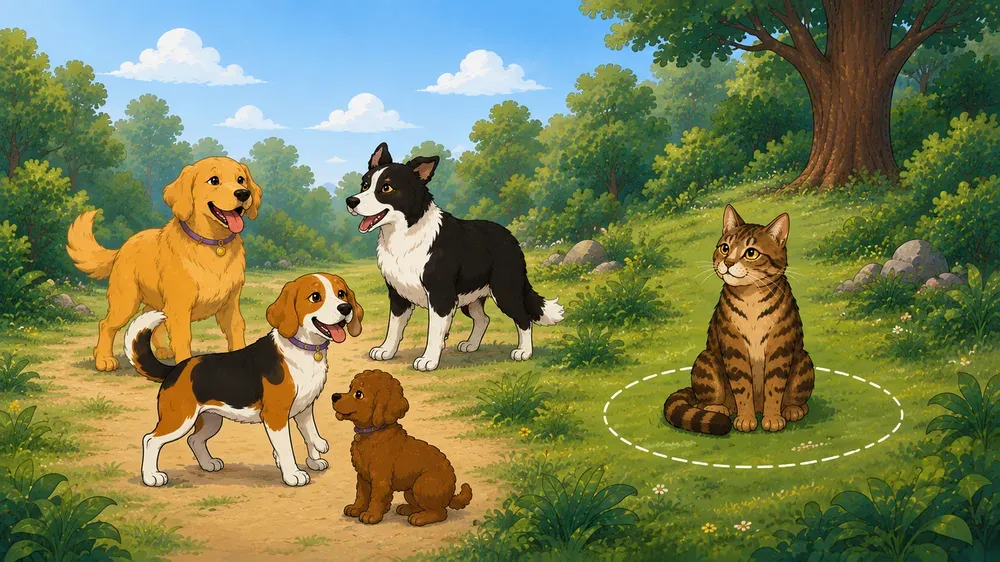
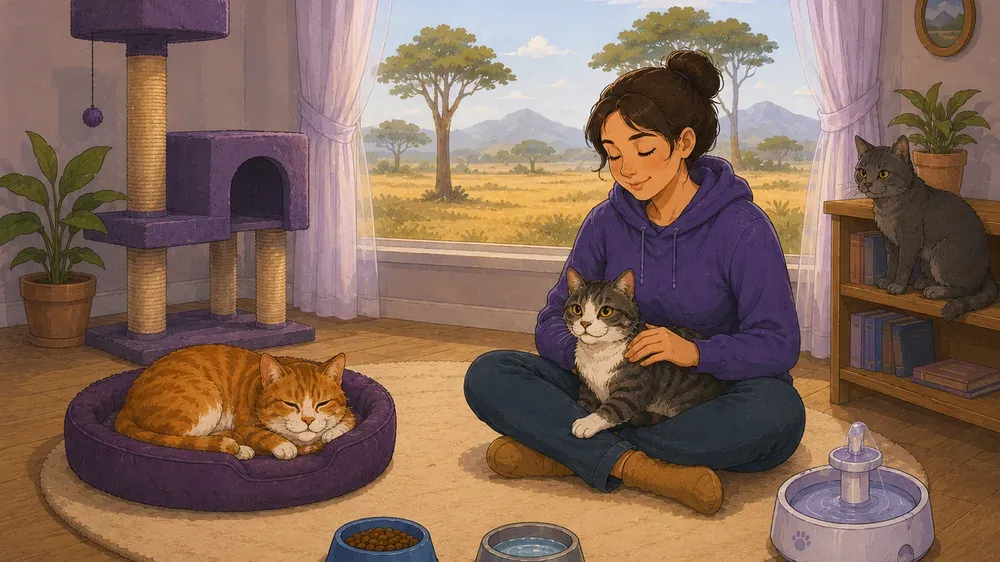
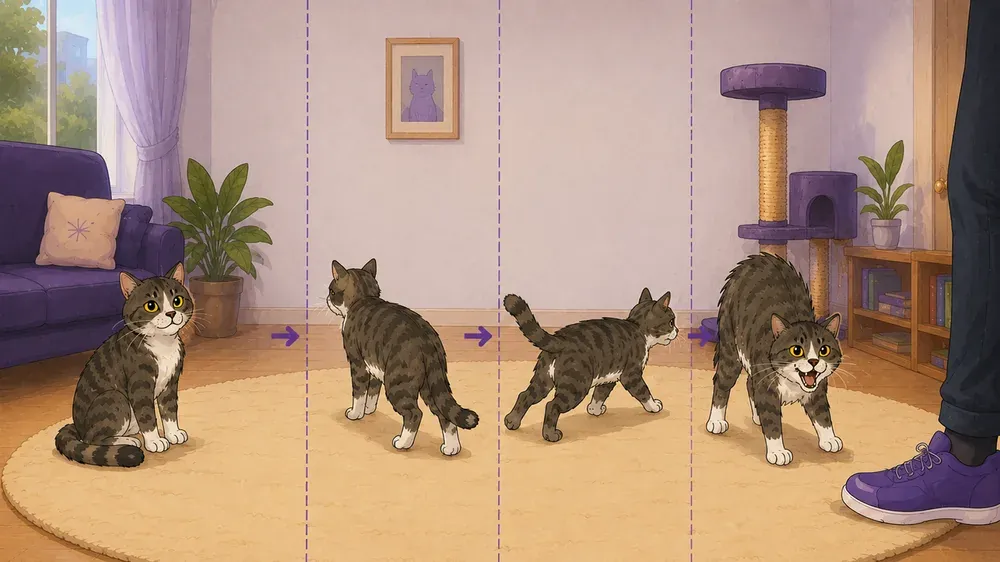
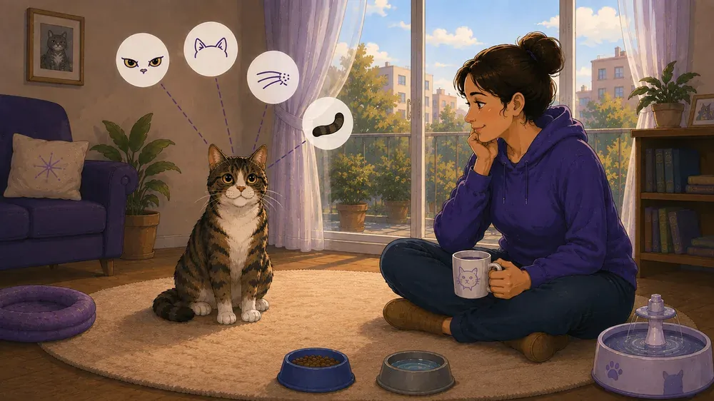

Συμπεριφορά
Για να καταλάβετε τη συμπεριφορά μιας γάτας του σπιτιού, πρέπει να θυμάστε από πού προέρχεται. Πρόγονός της είναι η αφρικανική αγριόγατα, ένας μοναχικός θηρευτής που υπερασπίζεται την επικράτειά του.





1. Από πού προέρχονται οι συνήθειες της γάτας: το παρελθόν ενός μοναχικού κυνηγού
Για να καταλάβετε πραγματικά τις αντιδράσεις μιας γάτας του σπιτιού, πρέπει να κοιτάξετε το παρελθόν της. Οι σκύλοι κατάγονται από ζώα της αγέλης που ξέρουν να διαπραγματεύονται και να συμφιλιώνονται μετά από καβγάδες. Ο πρόγονος της οικόσιτης γάτας όμως ήταν η αφρικανική αγριόγατα — ένας αμετανόητος μοναχικός. Αυτοί οι θηρευτές ζούσαν μόνοι, φύλαγαν άγρια την επικράτειά τους και βασίζονταν μόνο στον εαυτό τους. Αυτή η ιστορία διαμορφώνει σε μεγάλο βαθμό τον χαρακτήρα κάθε γάτας σήμερα.
Παρόλο που οι γάτες ζουν πολύ καιρό δίπλα στους ανθρώπους, κατά βάθος παραμένουν μοναχικοί κυνηγοί. Αποδείχθηκαν όμως εξαιρετικά ευέλικτες: αν υπάρχει άφθονη τροφή και το περιβάλλον είναι ήρεμο, οι γάτες μπορούν άνετα να δεθούν και με άλλες γάτες και με ανθρώπους.
Ένα γατάκι μαθαίνει να εμπιστεύεται τους ανθρώπους πιο εύκολα στη λεγόμενη ευαίσθητη περίοδο — περίπου από τη δεύτερη έως την ένατη εβδομάδα της ζωής του. Όμως ακόμα και η πιο τρυφερή γάτα χρειάζεται σε όλη της τη ζωή να νιώθει ότι ελέγχει την κατάσταση, ότι καταλαβαίνει τι θα γίνει μετά και ότι έχει πάντα τρόπο να αποσυρθεί σε περίπτωση κινδύνου.
Επειδή οι γάτες ζούσαν πάντα μόνες, δεν έμαθαν ποτέ να δείχνουν υποταγή (όπως κάνουν οι σκύλοι για να αποφύγουν έναν καβγά). Μπροστά σε μια απειλή, η γάτα προτιμά να παγώσει, να κρυφτεί ή να φύγει — θα επιτεθεί ανοιχτά μόνο ως έσχατη λύση, όταν δεν έχει πού αλλού να πάει. Επιπλέον, στη φύση η εκδήλωση πόνου ή αδυναμίας είναι πολύ επικίνδυνη — σε κάνει εύκολη λεία. Εξαιτίας αυτού του ενστίκτου, οι γάτες κρύβουν εκπληκτικά καλά την ασθένεια και τον έντονο πόνο, κάτι που συχνά γίνεται πρόβλημα, αφού οι ιδιοκτήτες και ακόμα και οι κτηνίατροι δεν προσέχουν πάντα έγκαιρα ότι ένα ζώο δεν είναι καλά.
2. Η γλώσσα του σώματος: πώς μιλούν οι γάτες χωρίς λόγια
Οι γάτες επικοινωνούν συνεχώς με τον κόσμο, απλώς όχι όπως εμείς. Σπάνια χρησιμοποιούν τη φωνή τους και βασίζονται κυρίως στη γλώσσα του σώματος: στάσεις, κινήσεις της ουράς, εκφράσεις του προσώπου και ένταση των μυών. Για να καταλάβετε μια γάτα, πρέπει να βλέπετε όλη την εικόνα — αν κρίνετε από μία μόνο λεπτομέρεια (π.χ. μόνο την ουρά), μπορεί να πέσετε πολύ έξω.
Η θέση της ουράς είναι εξαιρετικός δείκτης διάθεσης. Μια ουρά όρθια προς τα πάνω λέει ότι η γάτα είναι σίγουρη, φιλική και έτοιμη για επαφή· αν η άκρη κυρτώνει σαν ερωτηματικό, αυτό είναι ένας ζεστός χαιρετισμός. Μια χαλαρή ουρά στο ύψος της πλάτης ή λίγο πιο χαμηλά σημαίνει ότι η γάτα είναι ήρεμη αλλά παρακολουθεί. Αν μια γάτα φοβάται ή ανησυχεί, μαζεύει την ουρά ανάμεσα στα πίσω πόδια, προσπαθώντας να φανεί όσο πιο μικρή γίνεται. Όμως όταν είναι πολύ τρομαγμένη ή έτοιμη να αμυνθεί, η αντίδραση είναι η αντίθετη: το τρίχωμα της ουράς σηκώνεται και φουσκώνει σαν βούρτσα για μπουκάλια — το ζώο προσπαθεί να φανεί μεγαλύτερο και πιο απειλητικό.
Οι κινήσεις της ουράς έχουν την ίδια σημασία. Αν τρέμει ελαφρά μόνο η άκρη, η γάτα είναι πολύ συγκεντρωμένη σε κάτι ή κυνηγά. Αν όμως η ουρά αρχίσει να χτυπά απότομα και δυνατά από τη μία πλευρά στην άλλη, είναι σαφές σημάδι ότι η γάτα είναι θυμωμένη ή εκνευρισμένη — και όσο πιο δυνατά και γρήγορα χτυπά η ουρά, τόσο πιο κοντά είναι η γάτα στο να ορμήσει σε κάτι. Αντίθετα, αν η ουρά τυλιχτεί απαλά γύρω από το πόδι σας, αυτό είναι το γατίσιο αντίστοιχο μιας αγκαλιάς.
Τα αυτιά της γάτας όχι μόνο πιάνουν τους πιο αδύναμους ήχους αλλά αποκαλύπτουν και τις πιο λεπτές αποχρώσεις της διάθεσης. Αυτιά στραμμένα μπροστά και λίγο προς τα έξω δείχνουν χαλαρή περιέργεια. Αν πέσουν και ανοίξουν στα πλάγια (η θέση «αεροπλάνο»), η γάτα νιώθει άβολα και ανησυχεί. Αυτιά κολλημένα στο κεφάλι είναι σημάδι σοβαρού φόβου ή ετοιμότητας για μάχη (έτσι τα προστατεύει από τραυματισμό). Αν το ένα αυτί κοιτά μπροστά και το άλλο πίσω, η γάτα είναι μπερδεμένη και προσπαθεί να ακούσει πολλά πράγματα ταυτόχρονα.
3. Πώς να αναγνωρίσετε τον κρυφό πόνο: η κλίμακα γκριμάτσας της γάτας (FGS)
Αφού οι γάτες κρύβουν ενστικτωδώς τις ασθένειές τους, είναι πολύ δύσκολο να καταλάβετε πότε πονούν. Μια γάτα με έντονο πόνο μπορεί να μην κλαίει ούτε να νιαουρίζει καθόλου — μπορεί απλώς να γίνει άτονη και να κρυφτεί. Για να λύσουν αυτό το πρόβλημα, ερευνητές του Πανεπιστημίου του Μόντρεαλ δημιούργησαν μια ειδική κλίμακα (Feline Grimace Scale, FGS) που επιτρέπει να εκτιμηθεί ο πόνος μόνο από την έκφραση του προσώπου του ζώου, χωρίς σύνθετο εξοπλισμό.
Η μέθοδος βασίζεται στο ότι οι μύες του προσώπου συσπώνται αντανακλαστικά από τον πόνο και η γάτα δεν μπορεί να το ελέγξει. Για να αξιολογήσετε μια γάτα με αυτή την κλίμακα, πρέπει να την παρατηρήσετε για περίπου 30 δευτερόλεπτα όσο δεν κοιμάται, δεν τρώει και δεν καθαρίζεται. Βαθμολογούνται πέντε περιοχές του προσώπου, η καθεμία από 0 έως 2 βαθμούς, και οι βαθμοί αθροίζονται. Οι μελέτες έδειξαν ότι βαθμολογία 4 ή περισσότερο σημαίνει ότι η γάτα πράγματι πονά σημαντικά και χρειάζεται επειγόντως παυσίπονο.
Είναι σημαντικό να θυμάστε ότι στις γάτες με πλακουτσωτό πρόσωπο (π.χ. Περσικές) είναι πιο δύσκολο να κρίνετε την ένταση στη μουσούδα και στα μουστάκια, αλλά τα μάτια και τα αυτιά θα δώσουν και πάλι ακριβές αποτέλεσμα.
4. Χαρά, εμπιστοσύνη και τρυφερότητα: πώς τα δείχνουν οι γάτες
Οι γάτες δεν έχουν τόσο πλούσιες εκφράσεις προσώπου όσο εμείς ή οι πίθηκοι. Δείχνουν τη χαρά και την αγάπη τους μέσα από τη μυρωδιά, τη στάση του σώματος και τους ήχους. Αν μάθετε να προσέχετε αυτά τα σήματα, θα καταλάβετε πόσο πολύ σας αγαπά το κατοικίδιό σας.
Ένα από τα πιο σαφή σημάδια πλήρους εμπιστοσύνης είναι το «αργό ανοιγοκλείσιμο των ματιών». Όταν μια γάτα σας κοιτά και κλείνει αργά τα μάτια της, ουσιαστικά λέει: «Δεν θα επιτεθώ» (ανάμεσα στους θηρευτές, το ευθύ, σταθερό βλέμμα είναι πρόκληση). Οι ερευνητές βρήκαν ότι αν ένας άνθρωπος ανοιγοκλείσει κι αυτός αργά τα μάτια κοιτώντας μια γάτα, η γάτα πιθανότατα θα ανταποδώσει — είναι ένας εξαιρετικός τρόπος να δείξετε συνειδητά σε μια γάτα ότι είστε φιλικοί.
Άλλο ένα σημαντικό σημάδι είναι όταν η γάτα τρίβει τα μάγουλα, το πηγούνι ή το κεφάλι της πάνω σας: έχει ειδικούς αδένες στο πρόσωπο που απελευθερώνουν καταπραϋντικές φερομόνες. Δεν πρόκειται μόνο για επαιτεία φαγητού — έτσι η γάτα σας μαρκάρει ως «δικό της», σας βάζει στην οικογένειά της και δείχνει ότι μαζί σας είναι ασφαλής.
Αν μια γάτα κοιμάται δίπλα σας, κολλημένη στο σώμα σας, σημαίνει ότι σας εμπιστεύεται την ασφάλειά της. Ο υψηλότερος βαθμός εμπιστοσύνης είναι όταν μια γάτα κοιμάται ανάσκελα, με τα πόδια ανοιχτά, δείχνοντας την κοιλιά της: στη φύση η κοιλιά είναι το πιο ευάλωτο σημείο, και η γάτα θα τη δείξει μόνο εκεί όπου δεν περιμένει κανέναν κίνδυνο. Και όταν μια γάτα σας φέρνει τα παιχνίδια της ή ένα ποντίκι που έπιασε, αυτό είναι επίσης πράξη φροντίδας που κληρονόμησε από τους άγριους προγόνους της: μοιράζεται τη λεία της μαζί σας και προσπαθεί να σας «ταΐσει».
5. Τα μυστικά του γουργουρίσματος: δεν είναι μόνο ευχαρίστηση
Τείνουμε να πιστεύουμε ότι αν μια γάτα γουργουρίζει, είναι σίγουρα απόλυτα ευτυχισμένη. Η επιστήμη όμως λέει ότι τα πράγματα είναι πολύ πιο σύνθετα. Το γουργούρισμα παράγεται από ρυθμικές συσπάσεις των μυών του λάρυγγα και του διαφράγματος — οι επιστήμονες βρήκαν μάλιστα στον λαιμό των γατών ειδικά μαξιλαράκια που μπορούν να δονούνται και να παράγουν αυτόν τον ήχο σχεδόν αυτόματα καθώς περνά ο αέρας.
Φυσικά, οι γάτες γουργουρίζουν όταν νιώθουν καλά. Όμως έμαθαν επίσης να χρησιμοποιούν το γουργούρισμα για να χειραγωγούν τους ανθρώπους. Υπάρχει το λεγόμενο γουργούρισμα «παράκλησης», που οι γάτες βγάζουν όταν ζητούν φαγητό ή προσοχή. Οι ερευνητές βρήκαν ότι μέσα σε αυτόν τον ήχο κρύβεται μια ψιλή κραυγή (σε συχνότητα 220-520 Hz) εκπληκτικά παρόμοια με το κλάμα ενός μωρού. Ακόμα και άνθρωποι που δεν είχαν ποτέ γάτα αντιλαμβάνονται αυτόν τον ήχο ως επείγοντα και ενοχλητικό — αποδεικνύεται ότι οι γάτες έμαθαν να εκμεταλλεύονται τα γονικά μας ένστικτα για να τις ταΐζουμε πιο γρήγορα.
Και δεν είναι μόνο αυτό. Οι γάτες μπορεί επίσης να γουργουρίζουν δυνατά όταν πονάνε πολύ, όταν φοβούνται ή όταν γεννούν. Κάποιοι πιστεύουν ότι αυτό είναι μια μορφή αυτοΐασης: οι δονήσεις στις συχνότητες του γουργουρίσματος (25 έως 150 Hz) θεωρείται ότι επιταχύνουν την επούλωση πληγών, μειώνουν τη φλεγμονή και βοηθούν ακόμα και τα σπασμένα οστά να κολλήσουν πιο γρήγορα.
Στην πράξη, είναι σημαντικό να θυμάστε ότι ένα ζώο μπορεί να γουργουρίζει και από χαρά, και όταν ελπίζει σε μια αγαπημένη λιχουδιά, και σε κατάσταση έντονου σωματικού στρες.
6. Το άγχος και η κλίμακα άγχους της γάτας (CSS)
Το άγχος στις γάτες είναι σοβαρό πρόβλημα που μπορεί να είναι οξύ (βραχυπρόθεσμο) ή χρόνιο (συνεχές). Ενώ το οξύ άγχος (ένας τρόμος από την ηλεκτρική σκούπα ή μια επίσκεψη στον κτηνίατρο) απλώς κινητοποιεί τους πόρους του οργανισμού, το χρόνιο άγχος καταστρέφει σιγά σιγά την υγεία της γάτας: στην αρχή ο οργανισμός προσπαθεί να προσαρμοστεί, αλλά τελικά έρχεται εξάντληση και το ζώο αρρωσταίνει σοβαρά. Για να βοηθήσει τους εργαζόμενους στα καταφύγια και τους κτηνιάτρους να εκτιμούν πιο εύκολα πόσο αγχωμένη είναι μια γάτα, δημιουργήθηκε η κλίμακα Cat Stress Score (CSS), που αξιολογεί την κατάσταση από 1 έως 7.
Μη προφανείς αιτίες άγχους και ασθένειες «από τα νεύρα». Οι ιδιοκτήτες συχνά δεν έχουν ιδέα τι κρατά τη γάτα τους συνεχώς σε ένταση. Για παράδειγμα, οι γάτες ακούνε εξαιρετικά καλά τους υπερήχους, οπότε οι συσκευές απώθησης τρωκτικών ή ο βόμβος των οικιακών συσκευών μπορεί να τις τρελάνει. Οι έντονες μυρωδιές τις ενοχλούν επίσης πολύ — για παράδειγμα, τα αποσμητικά χώρου ή τα αιθέρια έλαια εσπεριδοειδών. Και αν μια γάτα δεν έχει τρόπο να ανέβει ψηλά (σε ράφι ή δέντρο για γάτες) για να βλέπει το δωμάτιο από πάνω, θα νιώθει συνεχώς ευάλωτη.
Το συνεχές άγχος και τα αυξημένα επίπεδα κορτιζόλης (της «ορμόνης του στρες») οδηγούν σε πραγματική ασθένεια. Το πιο συχνό πρόβλημα είναι η ιδιοπαθής κυστίτιδα: η κύστη πονά και φλεγμαίνει χωρίς καθόλου βακτήρια, καθαρά από τα νεύρα, κάτι που μπορεί να κάνει τη γάτα να τρέχει συχνά στην τουαλέτα ή να αρχίσει να ουρεί έξω από αυτήν. Πολλοί πιστεύουν ότι η γάτα «εκδικείται», αλλά στην πραγματικότητα είναι απλώς άρρωστη. Οι γάτες μπορεί επίσης να αρχίσουν να γλείφονται μέχρι να σχηματιστούν μεγάλα φαλακρά σημεία, προσπαθώντας να ηρεμήσουν. Και αν το άγχος κάνει μια γάτα να σταματήσει να τρώει, αυτό είναι εξαιρετικά επικίνδυνο: η ασιτία στις γάτες μπορεί πολύ γρήγορα (μέσα σε λίγες μόνο μέρες) να οδηγήσει σε θανατηφόρα ασθένεια του ήπατος.
7. Τα κύρια λάθη των ιδιοκτητών στην επαφή με τις γάτες
Επειδή οι γάτες και οι άνθρωποι αντιλαμβάνονται τον κόσμο διαφορετικά, οι καλές μας προθέσεις μερικές φορές τις τρομάζουν. Η κατανόηση αυτών των διαφορών θα σας βοηθήσει να ζείτε αρμονικά με το κατοικίδιό σας.
Λάθη στο χάδι: γιατί μια γάτα δαγκώνει ξαφνικά. Το μεγαλύτερο λάθος είναι να υποθέτετε ότι αν μια γάτα γυρίσει ανάσκελα και δείξει την κοιλιά της, ζητά χάδι στην κοιλιά. Η εκτεθειμένη κοιλιά είναι σημάδι ότι η γάτα σας εμπιστεύεται, αλλά αν αρχίσετε να τη χαϊδεύετε, ενεργοποιείται το ένστικτο του θηρευτή: η κοιλιά πρέπει να προστατευτεί! Οι νευρικές απολήξεις εκεί είναι εξαιρετικά ευαίσθητες, οπότε η γάτα καταφεύγει αμέσως σε νύχια και δόντια — όχι από κακία, αλλά απλώς από ένα αρχέγονο αντανακλαστικό αυτοσυντήρησης.
Το δεύτερο συνηθισμένο λάθος είναι να χαϊδεύετε μια γάτα πολλή ώρα και πολύ έντονα σε όλη την πλάτη, ειδικά προς την ουρά. Αυτή η περιοχή είναι γεμάτη νευρικές απολήξεις. Αν τη χαϊδεύετε πολλή ώρα, το νευρικό σύστημα της γάτας υπερφορτώνεται και αρχίζει να νιώθει δυσάρεστα. Το αποτέλεσμα είναι η «επιθετικότητα από το χάδι»: πριν από μια στιγμή η γάτα γουργούριζε και τώρα δαγκώνει το χέρι σας μόνο για να σταματήσετε.
Να χαϊδεύετε μια γάτα όπως οι γάτες καθαρίζουν η μία την άλλη ως ένδειξη φιλίας.
8. Παρανοήσεις για τη συμπεριφορά
Σε πολλές ταινίες και κινούμενα σχέδια, μια γάτα με κυρτή πλάτη είναι σύμβολο επιθετικότητας και κακίας. Στην πραγματική ζωή όμως όλα εξαρτώνται από την κατάσταση. Αν μια γάτα κυρτώνει την πλάτη ενώ σας πλησιάζει, με χαλαρούς μύες και αυτιά στραμμένα μπροστά, απλώς τεντώνεται ευχάριστα και σας χαιρετά. Αν όμως η ίδια στάση συνοδεύεται από σηκωμένο τρίχωμα, άκαμπτα πόδια και κολλημένα αυτιά, η γάτα πανικοβάλλεται και προσπαθεί να φανεί μεγαλύτερη για να αμυνθεί από μια επίθεση. Αν προσπαθήσετε να τη χαϊδέψετε για να την «ηρεμήσετε», θα παλέψει για τη ζωή της και θα επιτεθεί.
Μια άλλη διασκεδαστική παρανόηση σχετίζεται με τη μυρωδιά. Συχνά μια γάτα μυρίζει κάτι καινούργιο (π.χ. τα παπούτσια σας) και μετά παγώνει με το στόμα μισάνοιχτο και ένα κάπως χαμένο βλέμμα. Οι άνθρωποι τείνουν να πιστεύουν ότι η γάτα εκφράζει αηδία. Στην πραγματικότητα, πίσω από τα μπροστινά δόντια, στον ουρανίσκο, η γάτα έχει μια ειδική δομή, το ρινοϋνικό όργανο (όργανο του Jacobson) — μια επιπλέον «μύτη» για την ανάλυση των πιο σύνθετων μυρωδιών και φερομονών. Ανοίγοντας ελαφρά το στόμα, η γάτα στέλνει τα μόρια της μυρωδιάς κατευθείαν σε αυτό — δεν μορφάζει από αηδία, αναλύει τη μυρωδιά προσεκτικά και σε βάθος.
9. Μην επιβάλλετε την επαφή και σεβαστείτε τα προσωπικά όρια
Οι κορυφαίοι κτηνιατρικοί οργανισμοί του κόσμου επιμένουν ότι το πιο σημαντικό για την ψυχική ευεξία μιας γάτας είναι η αίσθηση ελέγχου. Το πιο σοβαρό λάθος που μπορούν να κάνουν οι ιδιοκτήτες είναι να τραβούν με τη βία μια φοβισμένη γάτα κάτω από τον καναπέ ή να την κρατούν στην αγκαλιά τους ενώ παλεύει να ελευθερωθεί. Για μια γάτα, που είναι από τη φύση της μοναχική, κάθε απώλεια ελευθερίας μοιάζει, σε συναισθηματικό επίπεδο, σαν να πρόκειται να σκοτωθεί.
Αν μια γάτα συνηθίζει ένα νέο σπίτι ή απλώς είναι φοβισμένη (π.χ. έρχονται επισκέπτες), δώστε της πάντα την ευκαιρία να κρυφτεί σε ασφαλές σημείο, ιδανικά ψηλότερα από το πάτωμα.
Και ο χρυσός κανόνας: η γάτα πρέπει πάντα να είναι αυτή που ξεκινά το χάδι και το παιχνίδι. Μην της επιβάλλετε ποτέ τη συντροφιά σας.
Περισσότερα στην ενότητα
Οι πληροφορίες της εφαρμογής προέρχονται από ανοιχτές πηγές και από την εμπειρία ιδιοκτητών γατών. Δεν αντικαθιστούν τη συμβουλή και την εξέταση από κτηνίατρο. Τις αποφάσεις για την υγεία και τη φροντίδα του κατοικιδίου τις παίρνει ο ιδιοκτήτης του — αν έχετε οποιαδήποτε αμφιβολία, απευθυνθείτε σε κτηνίατρο.
Όλα αυτά υπάρχουν στην εφαρμογή Cat First
Άρθρα, λίστες ελέγχου και πρώτες βοήθειες στο τηλέφωνο, ακόμη και χωρίς internet.